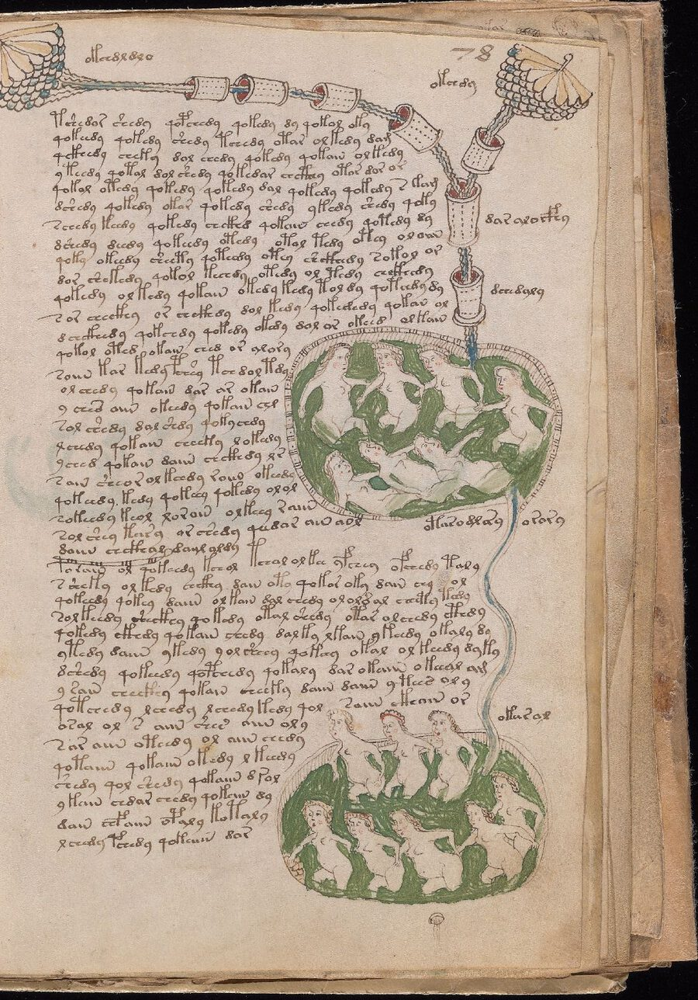

What the numbers
actually say.
Six findings, each stated first in plain words. Open the panels under each one for the linguistic reading and the statistical detail. Every value comes from a script in the repository.
One more glyph of context
helps almost nothing.
We predict the next glyph inside a word from the two, then the three, glyphs before it. The gain from that extra glyph tells us how much information sits further back.
Loading the chart…
| Corpus | Gain, min–max (bits) | Mean entropy, order 2 | Mean entropy, order 3 |
|---|---|---|---|
| Voynich, EVA | 0.0003–0.0014 | 1.9998 | 1.9988 |
| Voynich, connected EVA units | 0.0034–0.0146 | 2.0143 | 2.0071 |
| Codex Seraphinianus, OCR | 0.0878–0.1052 | 2.0392 | 1.9420 |
| Latin (Celsus, De medicina) | 0.3189–0.3844 | 2.8926 | 2.5413 |
| Italian (Murri) | 0.2955–0.3425 | 2.8722 | 2.5530 |
What it means for a linguist LINGUISTICS
In Latin and Italian, the third glyph back still constrains the next one: spelling and morphology carry information over several letters. In the Voynich, almost all of the predictable structure is already captured by the two preceding glyphs. Words behave as if built from short, locally chained pieces.
This does not show the absence of language. A syllabic script, a verbose cipher in which one sound is written with several glyphs, or a wrong segmentation of glyphs would all compress information into short local patterns. Grouping six connected EVA glyph clusters into single units already raises the gain from about 0.001 to about 0.009 bits.
Statistical detail STATISTICS
Three page-level splits (seeds 19201–19203), 60% training, 20% validation, 20% test. 1,104–1,139 training words and 270–301 test words per split; 874–1,070 internal test glyphs. Pseudo-pages for controls are blocks of 150 words. Models of order 0–5 with interpolated back-off; back-off strength chosen on validation from {0.1, 1, 10, 100, 1000}. Scored only on true glyphs from the fourth position of a word, identical for all orders; train-derived alphabet with an unknown class.
For raw EVA, all three page-bootstrap intervals for the gain include zero. For connected EVA, two of three exclude zero. The min–max range across overlapping splits is not a confidence interval, and no correction for multiple comparisons has been applied.
The text changes
with the pictures.
We took pages written by the same scribe in the same “dialect” (Currier B) and asked whether 30 words were enough to tell a herbal page from a bathing page.

A naive Bayes classifier, leaving out one bifolio group at a time
Hand 2, Currier B, 39 pages. Vocabulary built from training groups only.
| Information used | Pages correct | Balanced accuracy |
|---|---|---|
| Whole words | 34 / 39 | 87.4% |
| Only the last EVA glyph of each word | 34 / 39 | 87.5% |
| Only the last two EVA glyphs | 33 / 39 | 85.0% |
Why this is not proof of meaning
Word endings alone classify as well as whole words. And every bathing page in this sample comes from one quire (M), while the herbal pages come from others. Subject and physical position in the book are therefore confounded: a change of spelling habit over time would produce the same result.
Statistical detail STATISTICS
Multinomial naive Bayes, add-one smoothing, uniform class prior. Leave-one-group-out over 10 groups defined by quire and bifolio number. 30 tokens per page sampled without replacement from line-internal positions; first and last words and uncertain lines excluded. Main seed 20261017. Over 30 resamplings, median balanced accuracy is 92.5% for words (range 82.2–97.5%) and 84.8% for final glyphs (74.5–95.0%). Permutation reference with labels shuffled by bifolio group: 1,999 permutations, empirical p = 0.012. That null does not control for quire.
A tree-shaped grammar
does not beat a chain.
Human syntax nests phrases inside phrases. We compared a small probabilistic grammar that builds trees (PCFG) with a model that only chains states left to right (HMM), on the same lines of text.
| Corpus | PCFG (bits/token) | HMM (bits/token) | PCFG − HMM | 95% interval |
|---|---|---|---|---|
| Voynich | 2.312988 | 2.293697 | +0.019291 | [+0.006544, +0.034324] |
| Codex Seraphinianus, OCR | 2.075637 | 2.079046 | −0.003408 | [−0.008042, +0.000793] |
We nearly published a false negative
The first version of this test failed its own sanity check: on synthetic text generated by a known tree grammar, it could not find the tree. We kept that failure in the record. A stronger fit with more restarts then recovered the synthetic grammar (0.8755 bits against 0.8758 for the true grammar and 0.8991 for the HMM). Only then did we run it on the manuscripts.
What it means for a linguist LINGUISTICS
The models see each word only as one of six suffix classes (five frequent endings plus “other”) and have two latent states each. Lines are treated as units, but we do not know that a line is a sentence. The result rejects one specific prediction: this two-state grammar on this representation. It says nothing about richer grammars, other units, or Andrea Moro's structure-dependence constraints, which would first require knowing what the syntactic units are.
Statistical detail STATISTICS
Lines of 4–14 words; page split 60/20/20; training capped at 1,200 lines. Four initialisations (seeds 13, 29, 43, 61), up to 100 EM iterations, Dirichlet(0.3) initialisation, smoothing 0.1, model selection on validation for both PCFG and HMM. 2,000 paired bootstrap resamples over 40 Voynich and 57 Seraphinianus test pages. Length-conditional probabilities and PCFG normalisation were checked by enumerating every binary string of length 1–5.
The codebreaker works.
Just not here.
Could the herbal section be Latin or Italian written in a secret alphabet, one glyph per letter? We built a solver, proved it on known ciphers, then turned it on the manuscript.
On both controls the solver recovered 100% of the letter mapping. For the Voynich there is no true text to compare against; the decoded strings are mechanical output, not readings.
What it means for a linguist LINGUISTICS
A key-independent check points the same way. A one-to-one substitution keeps repeated letters repeated, so a triple glyph must come from a triple letter. 39 of 3,844 Voynich words contain one; the Latin text has 0 of 7,595 and the Italian 1 of 19,118. Treating iin-type stroke groups as single glyphs would change this, so the result is tied to our choice of 23 units.
The test excludes only this family of ciphers: simple substitution, spaces kept, these two languages, these units. Homophonic ciphers, syllabaries, abbreviation systems and other languages remain untested.
Statistical detail STATISTICS
Herbal pages, hand 1, Currier A, from the ZL3b transcription. Pages split by SHA-256 of the page name modulo 3: 19,113 characters for the key search, 18,820 for evaluation. Character 4-gram models with smoothing 0.01, trained on Celsus (40,052 characters) and Murri (95,555 characters). Simulated annealing, 8 restarts × 50,000 swap proposals, temperature 60 → 0.06, seed 20261017. The search is heuristic and does not cover the whole key space.
Rules everywhere,
at small scale.
Measured on 2,952 fully legible paragraph lines (25,373 words) of the ZL3b transcription, against shuffles that keep each line's words but change their order.
Local regularities and their null models
| Pattern | Observed | Expected by chance | Verdict |
|---|---|---|---|
| Shared information, last glyph of a word → first glyph of the next | 0.2071 bits | 0.0163 (range 0.0128–0.0208) | Far above chance |
| Paragraph-initial words starting with a gallows glyph (f, k, p, t) | 89.4% | 8.5% at other line starts | Strong |
| Word pair s aiin | 38 | 5.45 | Above chance |
| Word pair or aiin | 37 | 6.49 | Above chance |
| Word pair ol shedy | 21 | 7.15 | Above chance |
| Same word twice in a row | 218 | 210.9 (range 174–254) | No excess |
Word pairs were chosen after counting, so their ratios are descriptive. Joining uncertain spaces (commas in the transcription) lowers the pair counts but keeps them well above expectation.
What it means for a linguist LINGUISTICS
The boundary dependency is the kind of effect produced by sandhi, agreement or fixed phrases, but also by ligatures, segmentation choices or a generator that conditions each word on the previous one. The gallows rule looks like a convention for marking paragraphs, comparable to decorated initials. Repeated words, often cited as evidence of a mechanical process, turn out to be no more frequent than shuffling predicts in this sample.
Words cluster by section,
in every book.
Montemurro and Zanette (2013) showed that Voynich words cluster in parts of the text, as topic words do in natural language. We ran a simplified version on all four corpora.
Excess mutual information between word and text block, blocks of 1,000 words
First 7,500 tokens of each corpus; excess over 99 global shuffles.
| Corpus | Excess (bits) |
|---|---|
| Latin | 0.1614 |
| Voynich | 0.1256 |
| Italian | 0.0963 |
| Codex Seraphinianus, OCR | 0.0820 |
A measure that cannot discriminate
The invented script clusters too. This statistic counts words per block and ignores order, so it detects topic-like vocabulary shifts in any text with sections, meaningful or not. It is not a full replication of the published analysis.
Two results we report with caution.
The Seraphinianus transcription has measurable errors
Comparison of OCR output with the 388 single-word training labels we could locate, on 199 pages.
| Agreement | Words | Share |
|---|---|---|
| Exact, at the same position | 284 / 388 | 73.2% |
| Within ±2 positions | 335 / 388 | 86.3% |
Typical disagreements are counts of repeated strokes (label Xeeei, OCR Xeei), exactly the detail that shifts context statistics. These labels come from training data, so this is not a validated character error rate.
Long prefixes and suffixes: not enough data
When prefix, local context and suffix are forced not to overlap, only 33–53 Voynich test words per split remain for 3-unit segments, and one for 4-unit segments. We draw no conclusion, positive or negative.
Which hypotheses survive?
Ten explicit claims, each with a verdict and the evidence behind it.
Read the hypotheses →